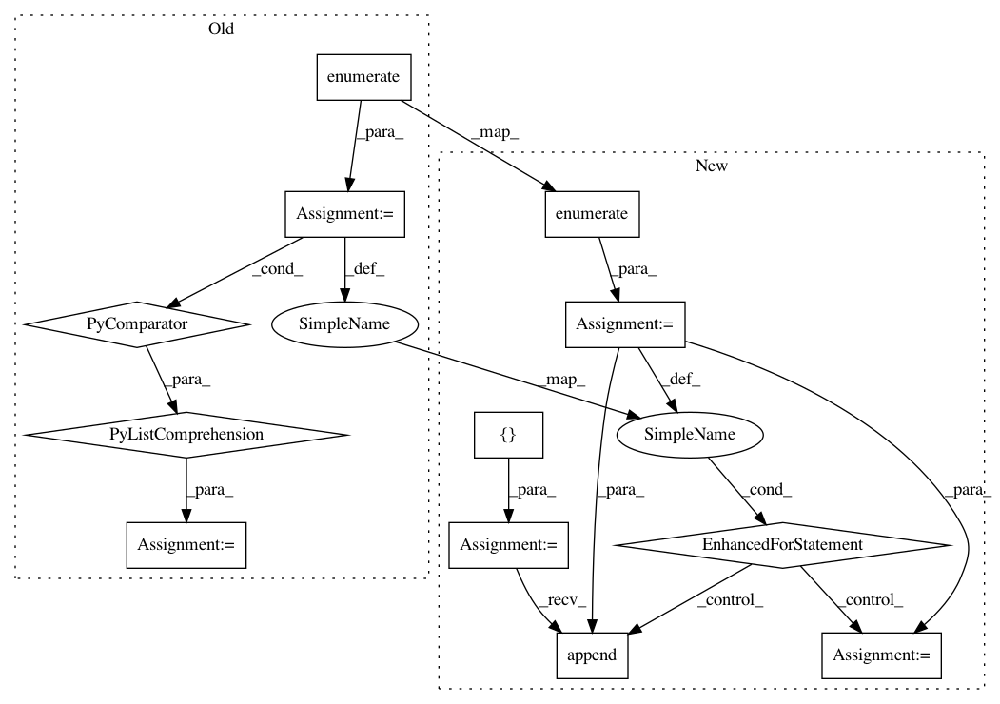

66d21e1fcd43323289840ce83e4193e6b9957d0c,pymc3/sampling.py,,sample_ppc_w,#Any#Any#Any#Any#Any#Any#,696
Before Change
// ensure n sum up to min_tr
idx = np.argmax(n)
n[idx] = n[idx] + min_tr - np.sum(n)
trace = np.concatenate([np.random.choice(traces[i], j)
for i, j in enumerate(n)])
obs = [x for m in models for x in m.observed_RVs]
variables = np.repeat(obs, n)
After Change
// ensure n sum up to min_tr
idx = np.argmax(n)
n[idx] = n[idx] + min_tr - np.sum(n)
trace = []
for i, j in enumerate(n):
tr = traces[i]
len_trace = len(tr)
nchain = tr.nchains
indices = np.random.randint(0, nchain*len_trace, j)
chain_idx, point_idx = np.divmod(indices, len_trace)
for idx in zip(chain_idx, point_idx):
trace.append(tr._straces[idx[0]].point(idx[1]))
obs = [x for m in models for x in m.observed_RVs]
variables = np.repeat(obs, n)
lenghts = list(set([np.shape(np.atleast_1d(o.distribution.default())) for o in obs]))
In pattern: SUPERPATTERN
Frequency: 3
Non-data size: 12
Instances
Project Name: pymc-devs/pymc3
Commit Name: 66d21e1fcd43323289840ce83e4193e6b9957d0c
Time: 2017-11-21
Author: junpeng.lao@unifr.ch
File Name: pymc3/sampling.py
Class Name:
Method Name: sample_ppc_w
Project Name: streamlit/streamlit
Commit Name: 523ac427f89056edc6f3e88226aeb4885d71c934
Time: 2019-04-25
Author: 44782696+aaj-st@users.noreply.github.com
File Name: lib/streamlit/proxy/ClientConnection.py
Class Name: ClientConnection
Method Name: serialize_final_report_to_files
Project Name: arnomoonens/yarll
Commit Name: 2dffe2c36bcbf9d0032a39c615bd92c19f75d06b
Time: 2017-04-16
Author: x-006@hotmail.com
File Name: agents/knowledge_transfer.py
Class Name: KnowledgeTransfer
Method Name: build_networks